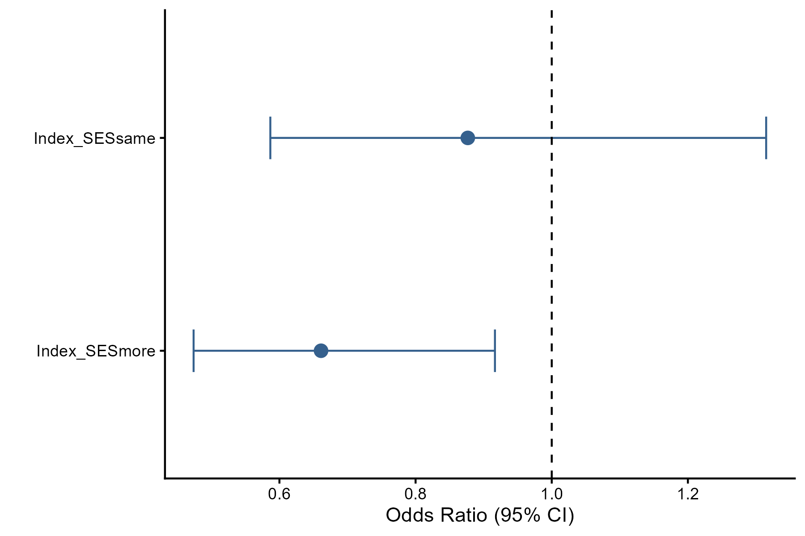
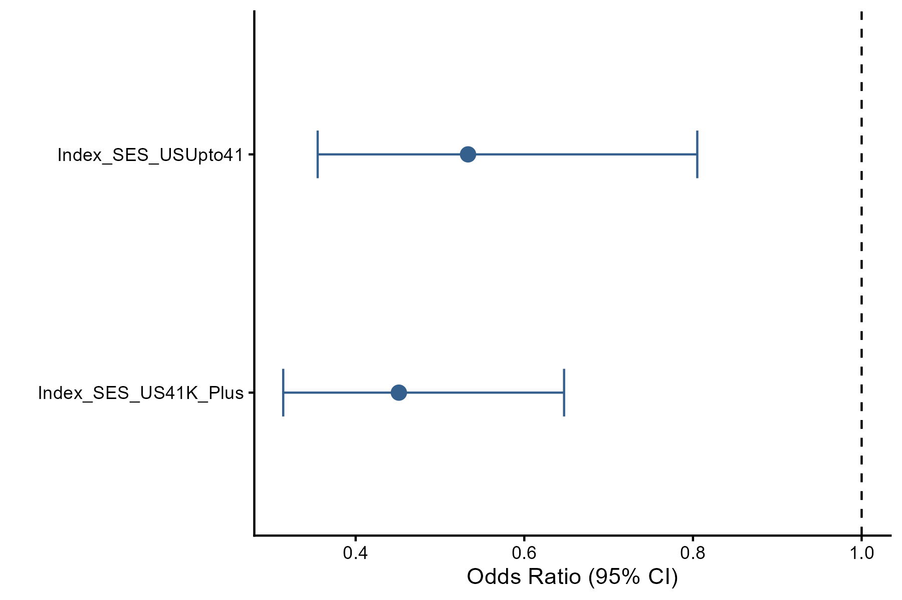
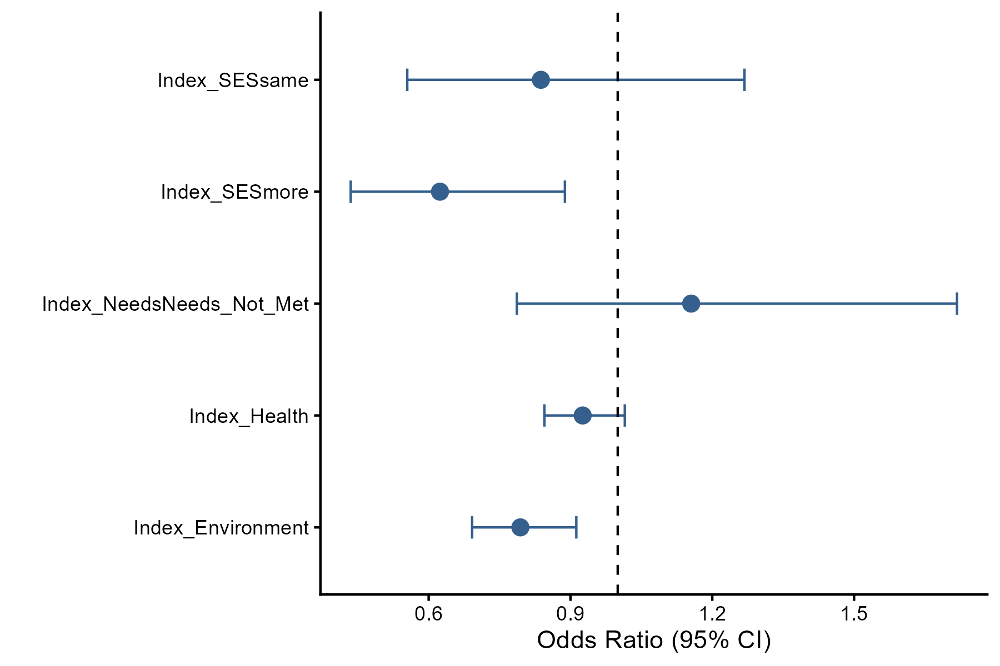
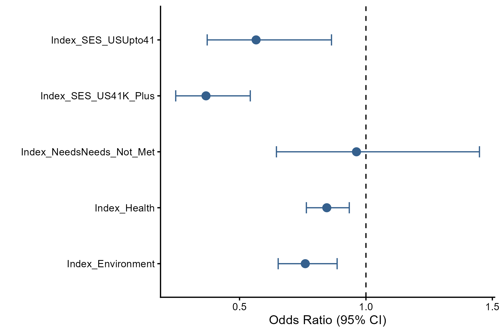
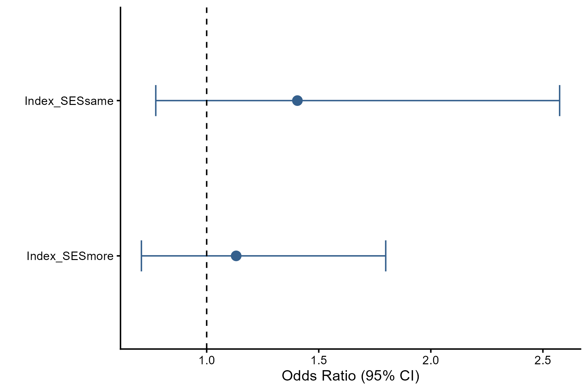
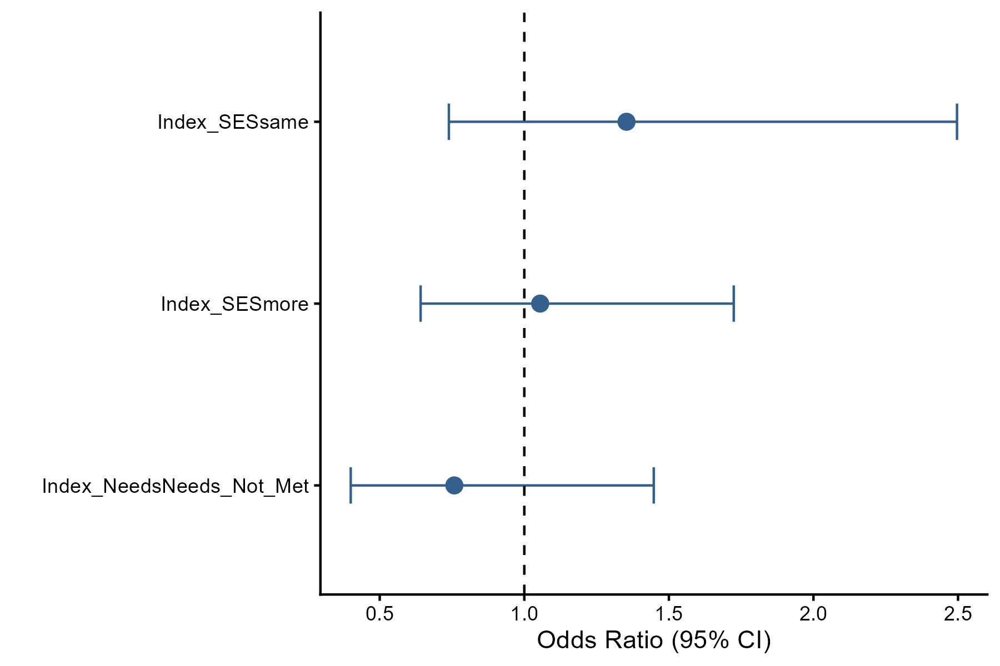
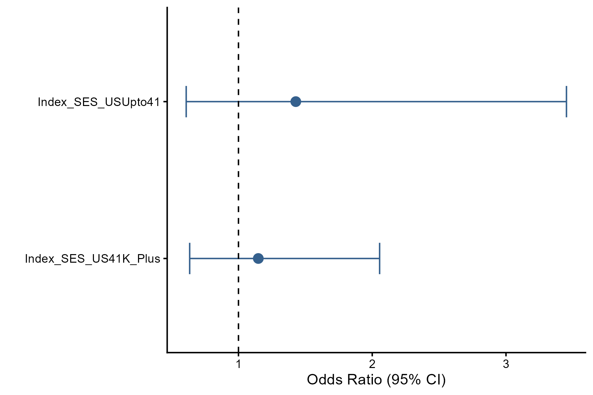
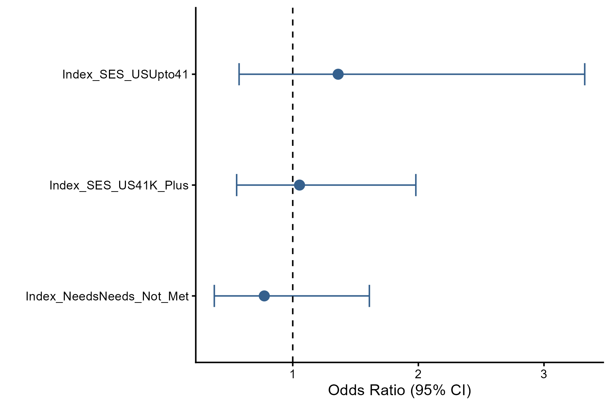
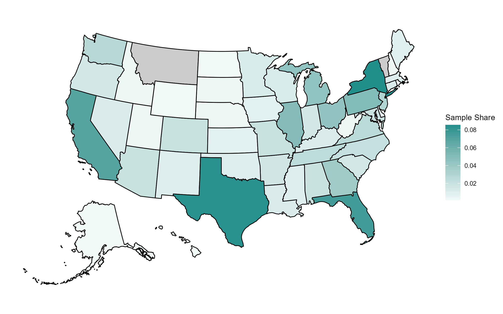

Exploring the relationship between SES and Race in COVID-19
Problem: Chemosensory loss (smell and taste) has been used as a diagnostic signal for COVID-19, but studies establishing that signal did not collect data on race or socioeconomic status (SES), leaving open whether the same signal holds across social groups already affected by environmental racism and/or health inequity.
Approach: Two surveys were used. The first was US-based, a paid sample from Qualtrics survey with income capped at below 41K and split equally into three racial groups (white, Black, Hispanic) with a target sample of 520 individuals. The second was global, an opportunistic survey. We examined variation in olfactory ability and odor awareness relative to socio-economic status (SES), race/ethnicity, health, environment, and odor awareness. We also tested the relationship between self-rated olfactory ability and odor awareness. The study was pre-registered and we conducted the tests as described with adjustments to handle unanticipated survey and data issues. We also identified methodological issues in the preregistration and conducted a more appropriate analytical workflow than originally conceived.
Insights: Odor awareness is significantly correlated with self-rated ability (tau=0.159, p<0.001), suggesting that self-related olfactory ability will be idiosyncratic without considering odor awareness. We created an awareness-adjusted ability measure to update the results of the pre-registered study. SES is associated with variation in self-rated olfactory ability, with lower income rating their ability higher when testing globally using a relative income-comparison measure when testing using US income brackets. Environment and health conditions negatively impact on olfactory ability. Models were under-powered for diagnosis but the trends indicate that those in higher income brackets are increasingly more likely to seek a diagnosis for COVID if they experienced loss of smell or taste.
Significance: These findings caution against treating smell/taste loss as a uniformly reliable diagnostic signal across socioeconomic groups, and demonstrate that self-reported chemosensory ability requires awareness-adjustment to be interpreted reliably. There is clear variation in olfactory ability across groups in the US and globally and health and environment negatively impact ability, regardless of SES.
Key Findings - Self-reported olfactory ability is significantly correlated with odor awareness (Kendall’s tau=0.159, p<0.001), which led to the development of an awareness-adjusted ability metric. - Those with comparatively more income relative to the general population rate their ability as lower. - Environmental exposure and health negatively impact olfactory ability. - Higher income brackets are more likely to seek a diagnosis for COVID follow smell and taste loss, but these findings are under-powered and require follow-up.
Research Answers
Pre-Registered Hypotheses and Exploratory Questions
The full pre-registered analysis pipeline is documented in two scripts (analysis-prereg-qualtrics.R and analysis-prereg-formr.R). The findings below report the outcome of each test. Full statistics, tables, and figures for each are available in the repository. The pre-registered analysis did not use the odor awareness adjusted olfactory ability for testing as it was not in scope.
- Household/Geography: Qualtrics — not significant. FormR — sparse cells prevented interpretation for the base household model, and the disaggregated household index failed entirely due to separation.
- Oral Health: Not significant in both datasets (no main effects or interaction with SES/Needs).
- Hypothesis 1 (Olfactory Ability ~ SES/Needs/Environment/Health): Qualtrics — SES and environment significant, health not significant. FormR — model dropped, failed the proportional-odds assumption (Brant omnibus p=0.05).
- Hypothesis 2 (Diagnosis-Seeking ~ SES + Race + Health): The model was underpowered in both datasets so no inferences can be drawn.
- Cluster Analysis 1, Olfactory Ability Trajectory (SES): Not significant in Qualtrics (p=0.1, OR=0.51, 95% CI crosses 1); significant in FormR (p=0.02), with the higher-SES cluster less variable – prediction not upheld in either dataset.
- Cluster Analysis 1, Olfactory Ability Trajectory (Race): Not significant in either dataset.
- Cluster Analysis 2, Odor Importance (SES): Not significant in both datasets (Qualtrics p=0.05, FormR p=0.4).
- Cluster Analysis 2, Odor Importance (Race): Not significant in Qualtrics (p=0.4); significant in FormR (p=0.04), with the minority-leaning cluster showing higher agreement – opposite of the predicted direction.
- Exploratory Questions, Respiratory/COVID Rates by Race and SES: Not significant in both datasets, except FormR’s
rate_covid_raceandrate_covid_sesboth failed due to sparse/empty cells. - Odor Awareness by Race: Not significant in either dataset (Wilcoxon rank-sum), though FormR’s binary comparison (p=0.05) sits much closer to the threshold than Qualtrics (p=0.4).
- Odor Awareness by SES, Needs, Household, and Environment: Not significant in either dataset (test type varies by predictor’s level structure – Wilcoxon for 2-level, Kruskal-Wallis for 3+-level nominal, Kendall’s tau for Environment only); the near-significant predictor differs – Needs in Qualtrics (p=0.05), Environment in FormR (p=0.08).
Olfactory Ability is Affected by SES, Environment, and Health
SES was tested against the awareness-adjusted ability outcome two ways: a relative income-comparison measure (less/same/more than the general population) usable across both Qualtrics and FormR, and a US income-bracket measure (Below32/Upto41/41K_Plus) usable on the US-only subset. Both the SES-only model and a combined model including Needs, Health, and Environment were fit for each SES measure. The proportional-odds assumption held for the relative-SES single-predictor models (SES omnibus p=0.23; race omnibus p=0.10) and, with one caveat, for the US income-bracket model (omnibus p=0.07 holds, though the 41K_Plus term individually approaches violation at p=0.03).Figure 2 shows that, using the relative-SES measure, those with comparatively more income than the general population rate their ability significantly lower than those with comparatively less (posthoc contrast, p=0.037; achieved power=0.72), while the same-vs-other contrasts were not significant.
Figure 2. Odds ratios, olfactory ability by relative SES.

Interpretation: The “more” term’s point estimate falls below 1 with a confidence interval that does not cross 1, consistent with its significant p-value; the “same” term’s interval crosses 1, consistent with its non-significant result.
Confidence intervals in the tables below (Table 1)are Wald approximations (exp(estimate ± 1.96×SE)), computed directly from the reported coefficients and standard errors; they are not identical to the profile-likelihood confidence intervals produced by confint() in the underlying script output, though they will be very close.
Table 1. Odds ratios, olfactory ability by relative SES.
| Term | OR | CI Low | CI High |
|---|---|---|---|
| Index_SES (more) | 0.661 | 0.476 | 0.919 |
| Index_SES (same) | 0.877 | 0.586 | 1.312 |
Using US income brackets on the US-only subset, the same pattern holds and is stronger: Below32 rates ability significantly higher than both Upto41 (p=0.0073) and 41K_Plus (p<0.0001), while Upto41 and 41K_Plus do not differ from each other (p=0.71); achieved power=0.996 (Table 2, Figure 3). The consistency of this direction across two independently-constructed SES measures strengthens the finding beyond what either measure alone would support.
Table 2. Odds ratios, olfactory ability by US income bracket.
| Term | OR | CI Low | CI High |
|---|---|---|---|
| Index_SES_US (Upto41) | 0.533 | 0.354 | 0.803 |
| Index_SES_US (41K_Plus) | 0.451 | 0.314 | 0.647 |
Figure 3. Odds ratios, olfactory ability by US income bracket.

Interpretation: Both income-bracket terms fall clearly below 1 with confidence intervals excluding 1, and the 41K_Plus point estimate sits further from 1 than Upto41, consistent with the larger effect size and smaller p-value for the highest-income group.
In the combined factors model using relative SES, both SES (“more” vs. “less”, p=0.0095, power=0.74) and Environment (p=0.0011, power=0.89) are significant predictors of ability, while Health (p=0.099, power=0.37) and Needs (p=0.47, power=0.12) are not – Environment is adequately powered, SES is close, and the remaining two non-significant terms are underpowered rather than confirmed nulls (Table 3, Figure 4).
Table 3. Odds ratios, olfactory ability by SES, needs, health, and environment (relative SES).
| Term | OR | CI Low | CI High |
|---|---|---|---|
| Index_SES (more) | 0.624 | 0.437 | 0.891 |
| Index_SES (same) | 0.837 | 0.554 | 1.265 |
| Index_Needs (Not_Met) | 1.155 | 0.782 | 1.706 |
| Index_Health | 0.926 | 0.845 | 1.015 |
| Index_Environment | 0.794 | 0.692 | 0.911 |
Figure 4. Odds ratios, olfactory ability by SES, needs, health, and environment (relative SES).

Interpretation: SES “more” and Environment both show point estimates below 1 with confidence intervals excluding 1; Health, Needs, and SES “same” all show intervals crossing 1, matching their non-significant results.
In the equivalent US income-bracket model, SES (both brackets), Health (p=0.0010), and Environment (p=0.0004) are all significant, and only Needs is not (p=0.85); all significant terms are well-powered (power=0.77-0.99), and Needs remains underpowered (power=0.05) rather than a confirmed null (Table 4, Figure 5) – Health is significant here but not in the relative-SES version, a discrepancy between the two SES tests.
Table 4. Odds ratios, olfactory ability by SES, needs, health, and environment (US income bracket).
| Term | OR | CI Low | CI High |
|---|---|---|---|
| Index_SES_US (Upto41) | 0.566 | 0.371 | 0.861 |
| Index_SES_US (41K_Plus) | 0.367 | 0.248 | 0.544 |
| Index_Needs (Not_Met) | 0.963 | 0.643 | 1.440 |
| Index_Health | 0.845 | 0.765 | 0.934 |
| Index_Environment | 0.760 | 0.653 | 0.885 |
Figure 5. Odds ratios, olfactory ability by SES, needs, health, and environment (US income bracket).

Interpretation: SES (both brackets), Health, and Environment all show point estimates below 1 with confidence intervals excluding 1; Needs is the only term with an interval crossing 1, consistent with it being the sole non-significant predictor in this model.
Given that Environment was a significant ability predictor in both factors models, a follow-up check tested whether SES itself predicts Environment exposure. Using the relative-SES measure, the association is not significant (Kruskal-Wallis chi-squared=5.3, p=0.07; no pairwise comparison reaches significance) – environment matters for ability, but is not itself explained by relative-SES group differences. Using US income brackets, the pattern is markedly different: the association is highly significant (Kruskal-Wallis chi-squared=48, p<0.0001), and all three pairwise comparisons are significant (Below32 vs. Upto41 p=0.0004, Below32 vs. 41K_Plus p<0.0001, Upto41 vs. 41K_Plus p<0.0001), showing a fully-separated gradient across all three income brackets. A parallel check for Health by US income bracket was also significant overall (Kruskal-Wallis chi-squared=11, p=0.005), driven by the Below32-vs-41K_Plus contrast (p=0.004); the other two pairs were not significant.
There are no Significant SES Differences in Seeking a Diagnosis due to Smell/Taste Loss
Diagnosis-seeking was tested on the subset of respondents who experienced smell/taste loss specifically attributed to COVID-19, using both the relative-SES measure and the US income-bracket measure, each with an SES-only model and a combined model including Needs.
Using the relative-SES measure, SES did not significantly predict diagnosis-seeking (more vs. less p=0.60; same vs. less p=0.27), and power was low (SES more=0.08, SES same=0.19) (Table 5, Figure 6).
Table 5. Odds ratios, diagnosis-seeking by relative SES.
| Term | OR | CI Low | CI High |
|---|---|---|---|
| Index_SES (more) | 1.132 | 0.711 | 1.801 |
| Index_SES (same) | 1.405 | 0.771 | 2.560 |
Figure 6. Odds ratios, diagnosis-seeking by relative SES.

Interpretation: Both SES terms show point estimates above 1 – consistent with the positive-direction trend noted below – but their confidence intervals cross 1, matching the non-significant p-values.
Adding Needs did not change this picture: neither SES nor Needs reached significance (SES more p=0.83, SES same p=0.33, Needs p=0.40), and all three terms remained underpowered (power=0.06-0.17) (Table 6, Figure 7).
Table 6. Odds ratios, diagnosis-seeking by relative SES and needs.
| Term | OR | CI Low | CI High |
|---|---|---|---|
| Index_SES (more) | 1.055 | 0.644 | 1.728 |
| Index_SES (same) | 1.354 | 0.737 | 2.484 |
| Index_Needs (Not_Met) | 0.758 | 0.400 | 1.438 |
Figure 7. Odds ratios, diagnosis-seeking by relative SES and needs.

Interpretation: SES terms again fall above 1 while Needs falls below 1, but all three confidence intervals cross their respective null value (1), consistent with none of the three terms reaching significance.
Using US income brackets, the same null pattern held: SES did not significantly predict diagnosis-seeking on its own (Upto41 p=0.42, 41K_Plus p=0.64; power=0.12 and 0.08) (Table 7, Figure 8).
Table 7. Odds ratios, diagnosis-seeking by US income bracket.
| Term | OR | CI Low | CI High |
|---|---|---|---|
| Index_SES_US (Upto41) | 1.429 | 0.603 | 3.384 |
| Index_SES_US (41K_Plus) | 1.148 | 0.640 | 2.061 |
Figure 8. Odds ratios, diagnosis-seeking by US income bracket.

Interpretation: Both income-bracket terms again show point estimates above 1 with confidence intervals crossing 1, the same non-significant, positive-direction pattern seen in the relative-SES version.
Nor was SES significant in the combined model with Needs (all p>0.48; power=0.06-0.12) (Table 8, Figure 9).
Table 8. Odds ratios, diagnosis-seeking by US income bracket and needs.
| Term | OR | CI Low | CI High |
|---|---|---|---|
| Index_SES_US (Upto41) | 1.361 | 0.568 | 3.262 |
| Index_SES_US (41K_Plus) | 1.054 | 0.559 | 1.988 |
| Index_Needs (Not_Met) | 0.773 | 0.375 | 1.595 |
Figure 9. Odds ratios, diagnosis-seeking by US income bracket and needs.

Interpretation: As in the relative-SES version, all three confidence intervals cross 1, consistent with no term reaching significance in this model.
Across all four SES-only and combined models, the direction of the (non-significant) SES coefficients was consistently positive – higher SES associated with somewhat greater odds of seeking a diagnosis due to smell/taste loss – matching the study’s original predicted direction, in contrast to the reversed direction found for self-reported ability. Given the consistently low power across all diagnosis-seeking models, these results should be read as inconclusive rather than as confirmed null findings.
Study Design
Data Source: Paid Qualtrics survey sample (n=520 target), income-capped and split evenly across white, Black, and Hispanic respondents in the US. FormR opportunistic global survey advertised through prior Global Consortium for Chemosensory Research contacts and social media.
Geographic representativeness of the US sample (Qualtrics and FormR combined, US respondents only) is shown below. Only two states had no respondents (Figure 10). The geographic distribution is uneven but broadly national, with New York, Texas, and Florida contributing the largest shares.
Figure 10. Sample share by US state.

Interpretation: Coverage spans nearly every state, with sample share concentrated in a handful of large-population states rather than evenly distributed; only Montana and Vermont show no respondents at all, indicating broad but uneven national reach.
Coverage spans nearly every state, with sample share concentrated in a handful of large-population states rather than evenly distributed; only Montana and Vermont show no respondents at all, indicating broad but uneven national reach.
Data Handling:
- Filtered to complete, consented, 18+ responses (888 raw responses reduced to 540)
- Six implausible-response pairs identified in the pre-registration were evaluated; two were reclassified as plausible after identifying a scope mismatch between a general/lifetime item and COVID-specific items, and the remainder were excluded per the original pre-registered logic. Additional unanticipated data challenges are noted in ‘data-cleaning-notes.md’.
- SES Index built two ways: formr
Index_SESis self-rated SES relative to the general population (less/same/more);Index_SES_USis an income bracket based household income metric, with Qualtrics capped at the lower income brackets and formr including all three brackets - Needs Index collapsed to a binary needs-met/not-met variable
- Health Index revised to remove one of two smoking responses and included oral health condition
- US race used three categories in Qualtrics and Yes/No responses to minority ethnic/racial status, excluding “unsure” responses
Analytical Approach:
- Fit proportional-odds logistic regression (
polr) for ordinal olfactory ability outcomes, and binary logistic regression (glm) for diagnosis-seeking outcomes - Test assumptions specific to each model: multicollinearity (VIF), proportional odds (Brant test), linearity of the logit (manual Box-Tidwell interaction method) where continuous predictors were used
- Report effect sizes as odds ratios with 95% confidence intervals
- Run simulation-based power analysis for
polrmodels, since no closed-form power formula exists for proportional-odds models with multiple cutpoints - Run k-means cluster analysis (k selected via elbow and silhouette methods) with Fisher’s exact test to test SES and race associations with olfactory trajectory and odor-importance clustering
- Use Kendall’s tau for correlations involving the non-normally distributed odor awareness index
Project Resources
Repository: covid-ses-race
Data:
- Qualtrics survey data (paid sample), raw data not shared due to PII, redacted data shared
- FormR survey data (opportunistic sample), raw data not shared due to PII, redacted data shared
Code:
remove_PII.R– strips PII (zip code to state) and removes data belonging to other researchers.clean.R– renames variables, recodes responses, resolves implausible-response pairs, for both Qualtrics and FormRindex.R– builds composite indices (SES, Needs, Household, Environment, Health, Odor Awareness, ST Loss Cause), for both Qualtrics and FormRanalysis-prereg-qualtrics.R– pre-registered Hypothesis 1, Hypothesis 2, cluster analyses, exploratory questions, and odor awareness tests, Qualtrics onlyanalysis-prereg-formr.R– pre-registered Hypothesis 1, Hypothesis 2, exploratory questions, and odor awareness tests, FormR onlyanalysis.R– joint Qualtrics-FormR dataset: SES grouping validity check, awareness-adjusted ability index, ability and diagnosis-seeking models by relative SES and by US income bracket, environment/health-by-SES follow-up tests
Project Artifacts:
- Figures: artifacts (n=33), outputs (n=10)
- Tables artifacts (n=61), outputs (n=37)
Environment:
renv.lockandrenv/– restore withrenv::restore()
License:
- Code and scripts (c) Kara C. Hoover, licensed under the MIT License.
- Data, figures, and written content (c) Kara C. Hoover, licensed under CC BY-NC-SA 4.0.
Tools & Technologies
Languages: R
Packages: dplyr | ggplot2 | qqplotr | car | MASS | brant | emmeans | factoextra | classInt | viridis | gridExtra | usmap | janitor | stringr | zipcodeR
Expertise
Domain Expertise: Biological Anthropology | Chemosensory Science | Health Disparities Research | Survey Methodology
Transferable Expertise: Designing and executing an independent, preregistered research pipeline end-to-end – from survey design through data cleaning, indexing, and statistical modeling.